Для демонстрации работы с объектами, тегами, методами и экранами Grafana сделаем следующий пример.
Допустим, у нас есть лампочка и мы можем тем или иным способом получить
данные по току и напряжению (работу с коннекторами рассмотрим в следующих примерах).
Кроме тока и напряжения у лампочки есть третий, расчётный тег - мощность.
При изменении силы тока или напряжения мощность должна перерасчитываться.
Для этого выберем тег «P» и нажмём кнопку «Новый метод»:
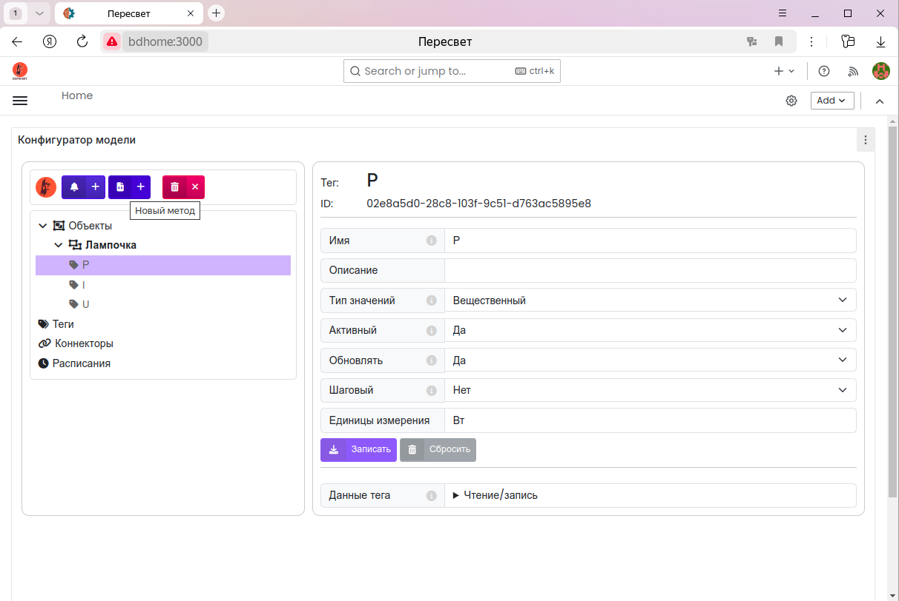
Затем:
Изменим имя метода
В поле «Адрес» введём название метода, под которым он будет зарегистрирован в системе для вызовов.
Запомним это имя - power:
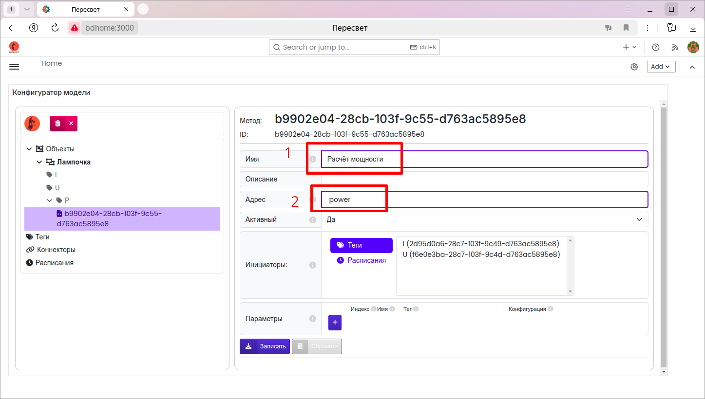
Блок «Инициаторы». Очень важный блок, в котором мы выбираем, какие события могут инициировать выполнение
расчётного метода.
Здесь выберем оба предложенных тега: I и U, то есть изменения обоих этих тегов будут приводить к
перерасчёту мощности.
Внимание
Обратите внимание, что в списке возможных инициаторов расчёта нет самого тега
«P»: изменение тега не может приводить к перерасчёту его самого, так как это вызовет бесконечный цикл
расчётов.
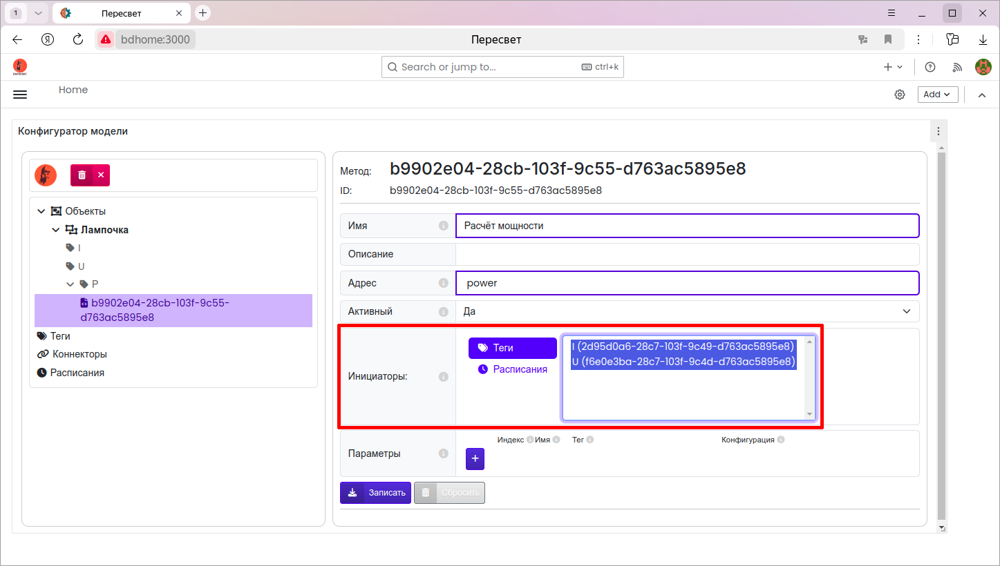
Укажем, какие данные необходимо передать методу для расчёта.
Данные, передаваемые в метод в каждом параметре - это результат запроса
полученияданных.
Для расчёта мощности нужны текущие значения двух тегов: силы тока и напряжения.
Поэтому создаём два параметра, дважды нажав на синюю кнопку с плюсом.
Заполняем данные параметров как показано на картинке:
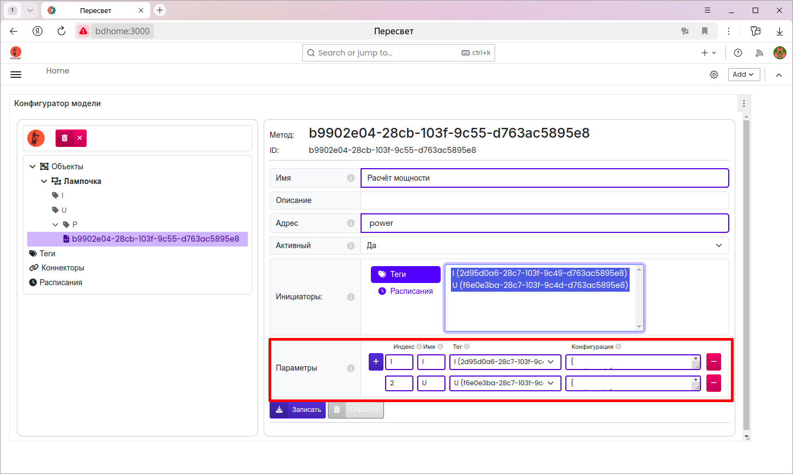
Здесь мы указали, что в метод передаются два параметра: первым (индекс = 1) - сила тока.
Вторым (индекс = 2) - напряжение.
Поле «Конфигурация» заполняется автоматически после выбора тега в поле «Тег».
Внимание
После изучения документации на запрос
полученияданных можно вручную править поле «Конфигурация»,
составляя сколь угодно сложные запросы получения данных. Поле «Конфигурация» можно расширять
для удобства ввода текста.
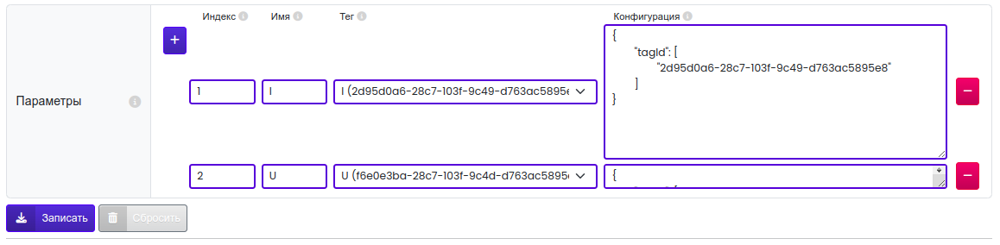
Внимание
Очень важный момент, относящийся к расчётам значений тегов: тег мощности рассчитывается,
когда изменяется значение тегов «I» и «U». Допустим, расчёт инициируется изменением тега «I» и метка
времени нового значения «I» - «2024-10-27 10:00:00+03:00». В этом случае запрос данных в параметрах
будет производиться также на метку времени «2024-10-27 10:00:00+03:00» и новое рассчитанное значение
тега мощности также будет записано с этой меткой времени, не смотря на то, что сам расчёт, возможно,
будет производиться в другое время.
Нажимаем кнопку «Записать» для сохранения изменений:
Откроем файл methods/test_method.py и рассмотрим метод calc_power:
@rpc("power")asyncdefcalc_power(I:dict,U:dict)->float:"""Метод возвращает произведение двух параметров. """print(f"I: {json.dumps(I,indent=4)}")print(f"U: {json.dumps(U,indent=4)}")cur_I=I["data"][0]["data"][0][0]cur_U=U["data"][0]["data"][0][0]ifcur_I==Noneorcur_U==None:return0returncur_I*cur_U
Внимание
Первая строка: @rpc("power"): именно «power» мы вводили в поле
«Адрес» при создании метода!
Далее - строка объявления метода: asyncdefcalc_power(I:dict,U:dict)->float:.
Первым параметром указана сила тока, вторым - напряжение. Точно так же, как мы указывали
индексы у параметров.
Далее метод просто для удобства выводит в консоль пришедшие данные, затем рассчитывает мощность
как произведение двух параметров.
Данные тегов (как, впрочем, и всё общение с платформой) приходят в виде json и для манипулирования
этими данными в Grafan’е рекомендуется изучить языки манипулирования json-данными
JSONata или
JSONPath.
Предпочтительнее JSONata, так как обладает большими возможностями.
Настроим отображение:
текущих значений тегов «I», «U» и «P»;
трендов значений этих тегов;
Создадим новую доску данных.
Для этого заходим в меню «Home –> Dashboards» и нажимаем кнопку «New»
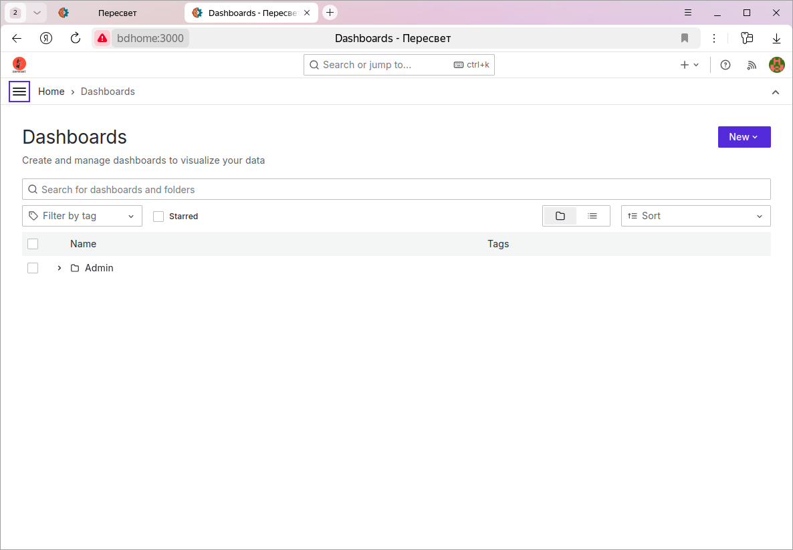
Выбрав в выпадающем меню команду «New dashboard», попадаем на экран создания новой панели:
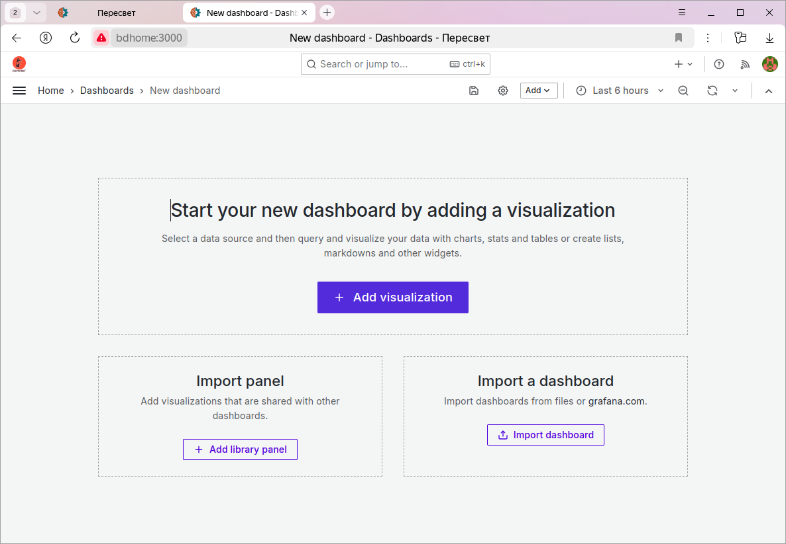
…и выбираем источник данных «peresvet»:
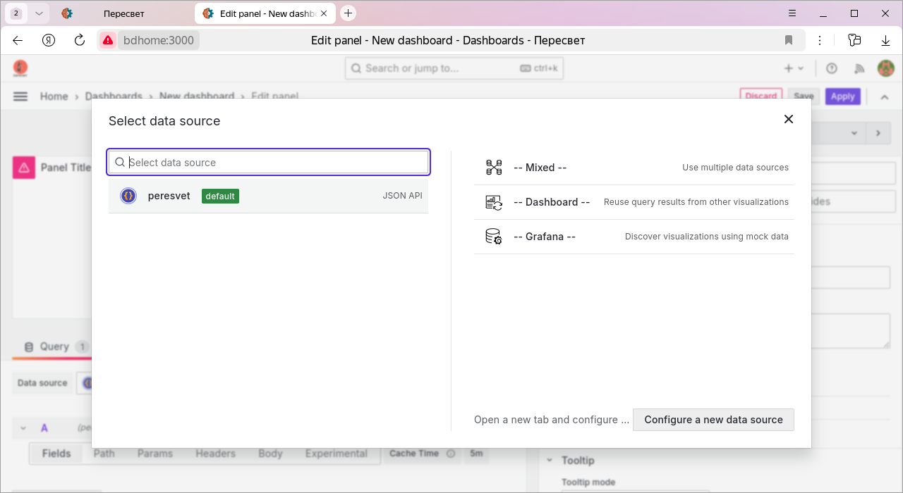
В появившемся окне настройки панели выберем тип панели «Stat».
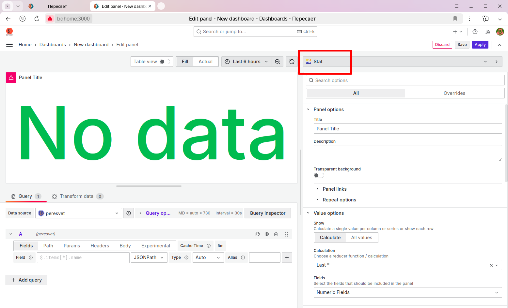
Настроим путь для получения данных, вписав /data/ на закладке Path.
Примечание
По умолчанию в источнике данных «peresvet» настроен путь к
платформе: http://<server>/v1/.
Добавляя к этому пути расширения data, objects, tags и т.д.,
мы получаем возможность работать не только с данными, но и вообще
со всеми сущностями платформы.
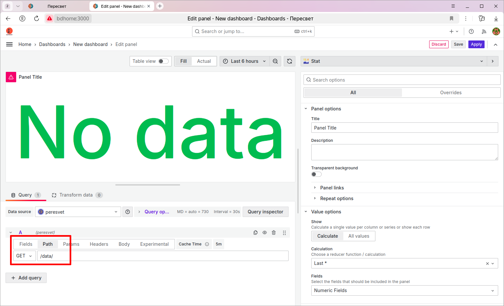
Настроим запросы получения данных.
Для того, чтобы не писать запрос вручную, его можно скопировать из конфигуратора.
Открываем конфигуратор, выбираем тег «I» и копируем запрос получения текущего значения тега.
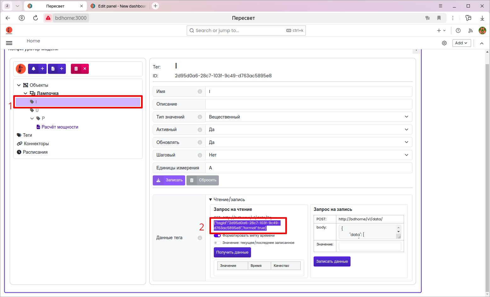
В окне настройки панели выбираем закладку «Params» и добавляем новый ключ «q».
Значение ключа - скопированный нами запрос:
Вводим выражение на языке JSONPath, разбирающее ответ от платформы с текущим значением тега
На экране появится «1» - текущее, введённое нами на предыдущих шагах значение тока.
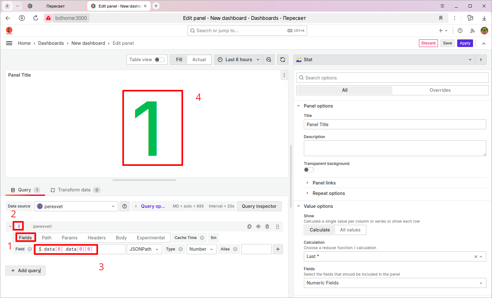
Повторим предыдущие шаги для оставшихся двух тегов напряжения и мощности,
добавляя новые запросы нажатием кнопки «Add query»:
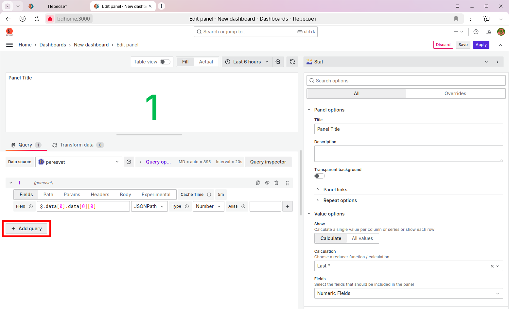
Предупреждение
У каждого поля отменим кэширование данных:
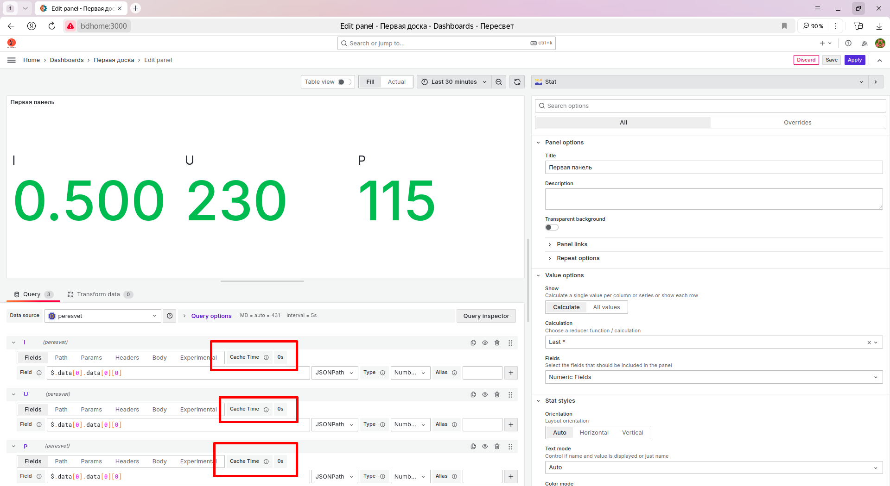
Окончательная настройка панели.
После настройки данных значения напряжения и мощности отображаются красным цветом.
Так выставлены настройки по умолчанию.
Чтобы все значения отражались зелёным цветом, уберём порог значения «80»;
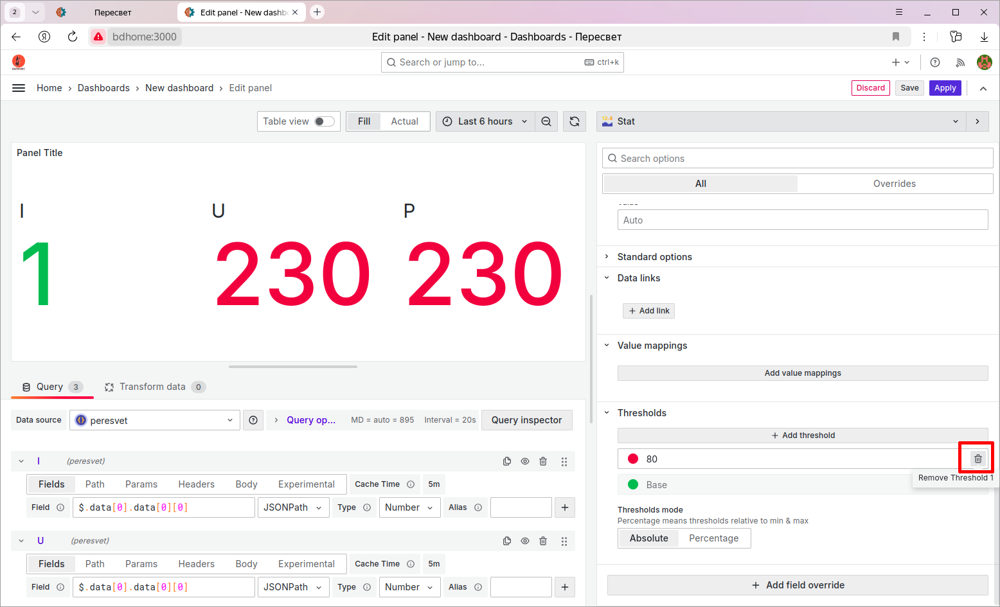
Переименуем панель и нажмем кнопку «Save»:
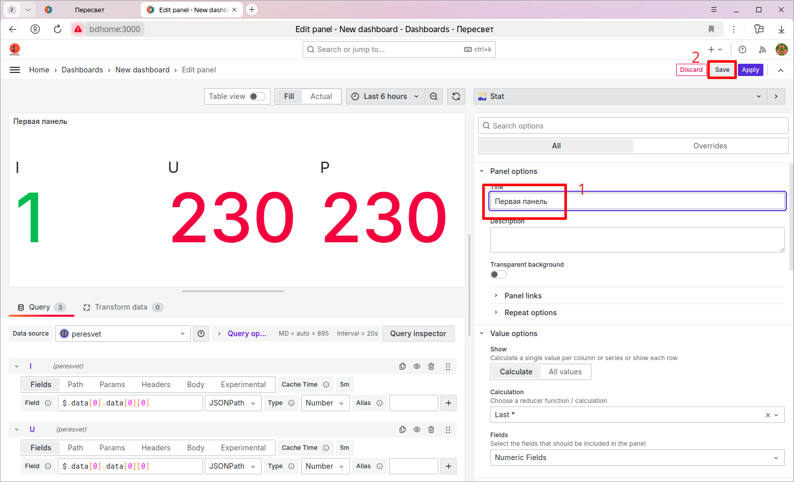
Появится окно, в котором нужно задать имя доски данных.
Предупреждение
Чтобы на панели рядом с именем тега не отображался 0, введите в поля
Alias пробел:
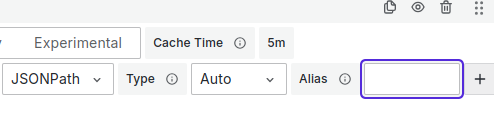
Выровняем новую панель на экране и создадим новую панель, с трендом, для чего
выберем команду «Add –> Visualization»:
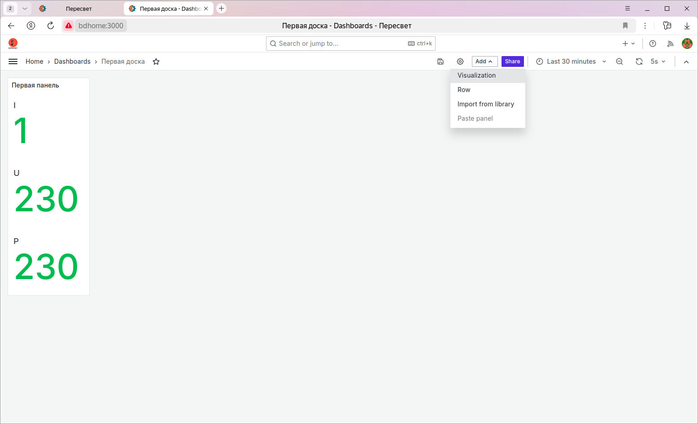
Настройка панели с трендом.
Тип панели оставим по умолчанию - «Time series».
Получение данных настроим похоже предыдущей панели, за исключением того, что ключ запроса «q»
будет включать функции Grafan’ы $__isoFrom() и $__isoTo(), обозначающие начало и конец
запрашиваемого временного периода:
Закладки «Fields» у всех трёх запросов должны быть такого вида:
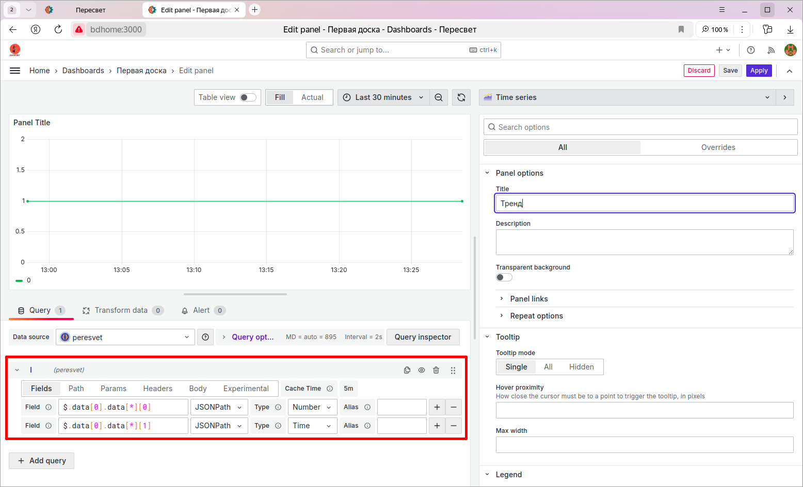
Выбор временных периодов.
Настроив панель с трендом для отображения трёх тегов, приведём доску данных приблизительно к такому
виду и выберем диапазон времени для отображения на экране, а также периодичность обновления данных:
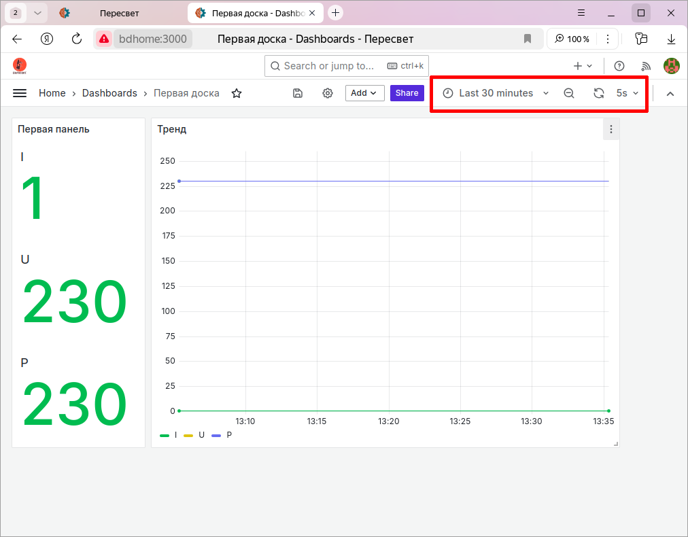
Проверим работу модели. Для чего записываем новые значения в теги «I» и «U» и наблюдаем
изменение данных на панели с электрическими параметрами: